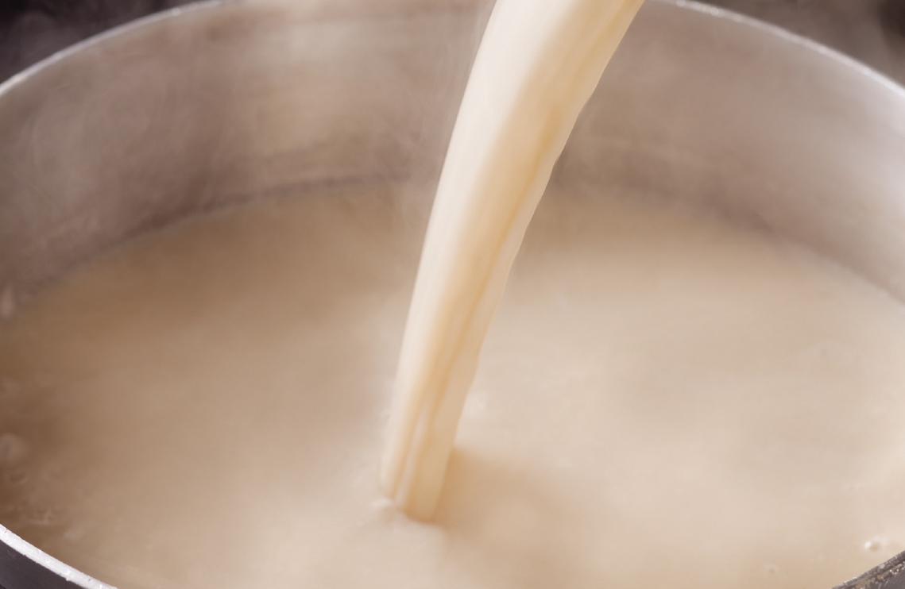
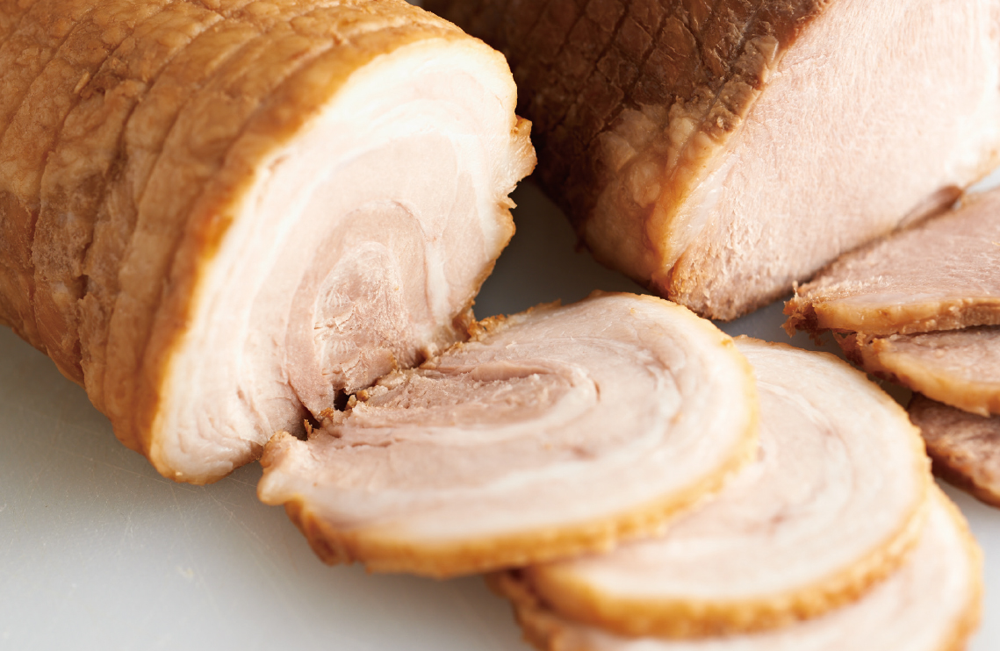

人氣NO.1的秘密
-

基底湯頭
採用傳統豚骨湯製作技法，結合獨特熟法，看似清淡，卻保有濃醇高雅的香氣，呈現多層次味覺，營造出宛如絹絲般的柔和、香醇風味。為象徵毛利嵐精神的豚骨基底湯頭。
-

王道‧五花叉燒
承襲毛利嵐使用至今的秘傳醬油基底，結合獨特製作手法，創造出入口即化的「王道‧五花叉燒」，搭配毛利嵐拉麵一同享用。
＊五花叉燒選用台灣國產豬肉製作 -
獨門基底醬汁
創業30餘年不斷創新製法，以數種不同醬油為基底，搭配毛利嵐秘傳熬製法製成。持續進化成最符合毛利嵐拉麵的「獨門基底醬汁」。獨門秘方僅有創辦人，以及少數獲得「匠」稱號的職人才可獲得其秘方。